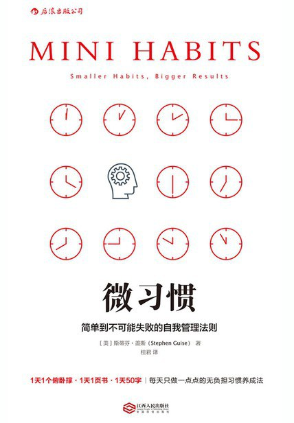

为什么我总是三分钟热度？
一个得不到执行的念头只会消亡。 ————罗杰·冯·欧克
研究表明，人总会习惯性地高估自己的自控力，所以我们常常在制定计划时许下豪言壮志，而在执行时又虎头蛇尾。
如果说执行某个行动需要调动意志力，动力越足，意志力消耗就越低，抵触情绪越低，做某件事的行动就越容易。因此，激发动力常常被用作执行行动的策略。这也很好解释，我们制定计划时往往是动力充足的时候，而在日常执行时，躺在床上不想运动，刷到彭于晏的励志视频补充动力，也容易产生出门跑步的念头。
然而，每个人都有不在状态的时候，精力不足无法调动意志力，计划的执行就成为了”明天再说“。激发动力的策略以人的感受为基础，而感受依赖此时此刻的状态。事实上，励志视频、鸡汤文或者给自己打气，并不是每一次都会奏效。状态不稳定，感受也不稳定，激发动力而采取行动也就不稳定，这种策略难以长此以往地达到效果。因为兴奋会递减，热情会亏损，依靠动力的劲头容易消失，于是“三分钟热度”很多时候就成为行动的结果。
长远地来看，对我们有益的目标并不总是短跑比赛，规律作息、阅读和思考、锻炼身体，这些好的行为和生活方式理应一直贯彻下去。这也是《微习惯》这本书第一个核心观点，如果一个行为终身受益，靠“热度”来维持并不可靠，不妨先花时间让它成为习惯。
2 让潜意识来接管你的行为
习惯的养成就是形成潜意识。“潜意识”一词听起来让人不明所以，理解这一点需要更深入地了解我们的大脑。
习惯的生物机制，在于建立神经通路，它在书中被描述为：
一旦某个习惯指定的神经通路被一个想法或外部信号触发，脑中就会有一个电荷沿着这条通路放电，然后你就会有一股想进行这项习惯行为的强烈欲望。
这种神经通路被称为基底神经节，我们每个人的大脑里都运行着这种机制。
大脑是由执行决策和进行自动行为模式识别的两部分组成的系统。执行决策的部分由前额皮层主管，就是我们俗称的理智；自动行为的部分由基底神经节控制，它倾向于重复。前额皮层的管理功能相当活跃，反应灵敏，但同时也消耗了大量的精力（和意志力）。基底神经节的自动功能不仅强大，而且效率高。它们能节省精力，无须持续监督就能处理各种任务。这种基底神经节的自动功能便是潜意识。
通俗来说，执行决策消耗精力，自动模式则容易得多。激发动力就是调动执行决策机制，而潜意识的行为则是开启自动模式。
我们可以这样理解，大脑的很多时候并不是由理智来主管的，基于潜意识的行为有时候并不会经过大脑的审视，这也解释了为什么坏习惯为什么总是容易发生，而对潜意识加以引导，则能够帮助我们形成有益的习惯。引导潜意识的奥秘在于重复，重复是潜意识大脑使用的语言。
这就来到了本书的重点，如何有效地重复来形成习惯？
3 微习惯的独特之处
4 从每天做五个俯卧撑开始
塑造你生活的不是你偶尔做的一两件事，而是你一贯坚持做的事。 ——安东尼·罗宾
与其三天打鱼两天晒网，不如日拱一卒，哪怕是一点点的行动，也比毫不作为强。
八个规则：
- 绝不要自欺欺人
- 满意每一个进步
- 经常汇报自己，尤其在完成微习惯之后
- 保持头脑清醒
- 感到强烈抵触时，后退并缩小目标
- 提醒自己这件事很轻松绝不要小看微步骤
- 用多余精力超额完成任务，而不是制定更大目标
5 我的微习惯
- 早睡早起：11点半前躺在床上，早上离开床后就不再上床
- 阅读：每日至少阅读10分钟
- 运动：跑步/游泳/爬楼 或者 10个俯卧撑
- 写作：每日写日记，50字或者一张生活照